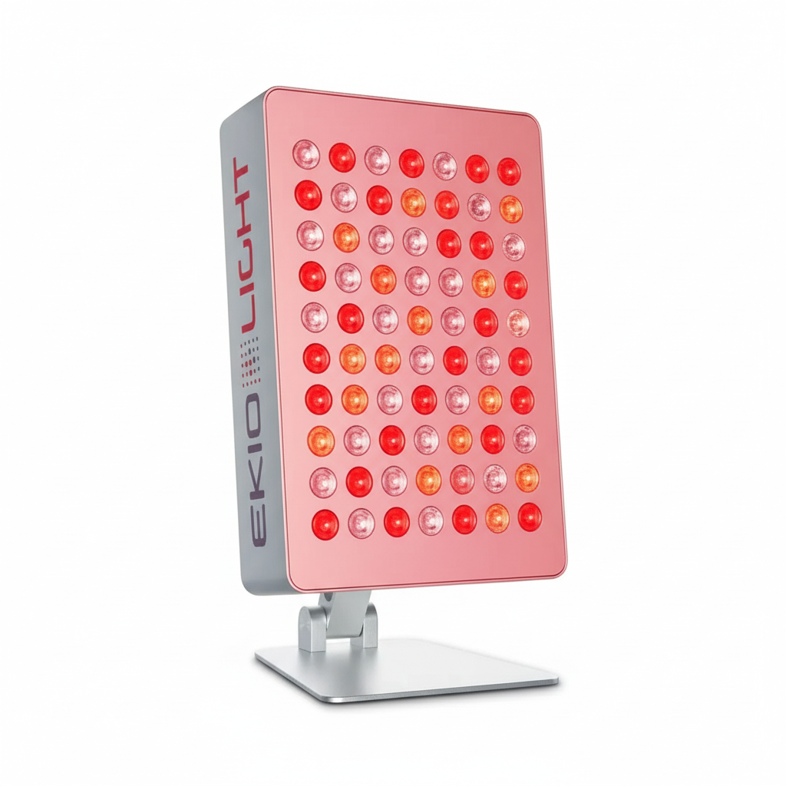
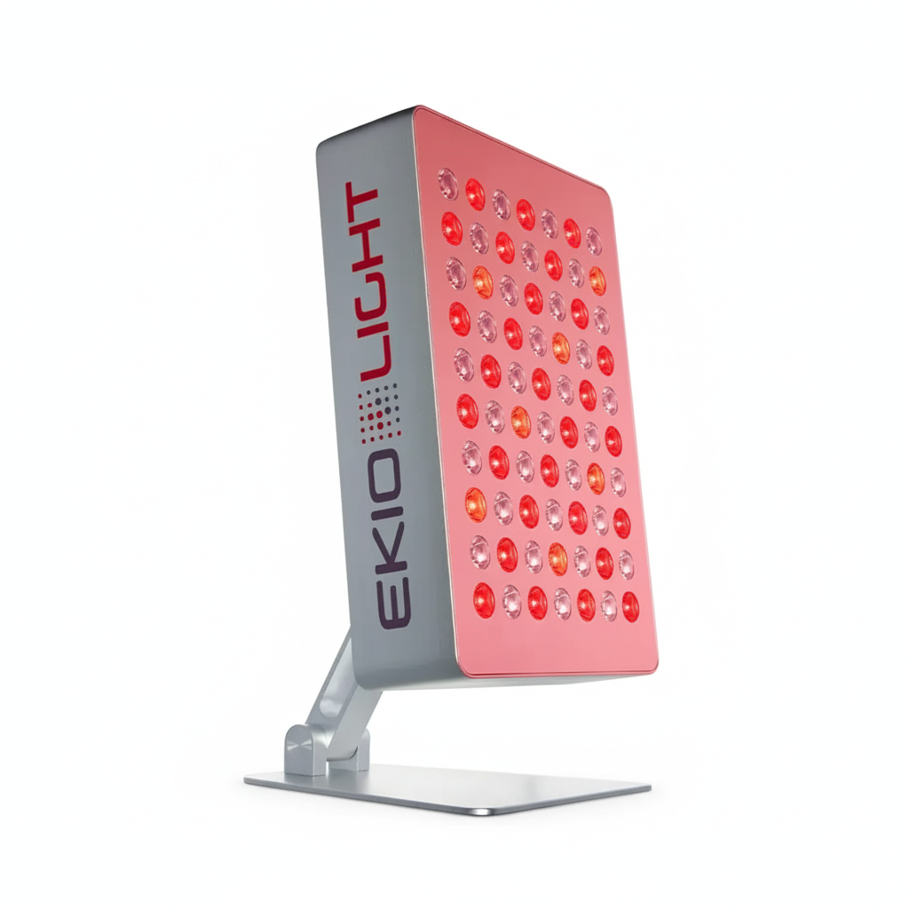
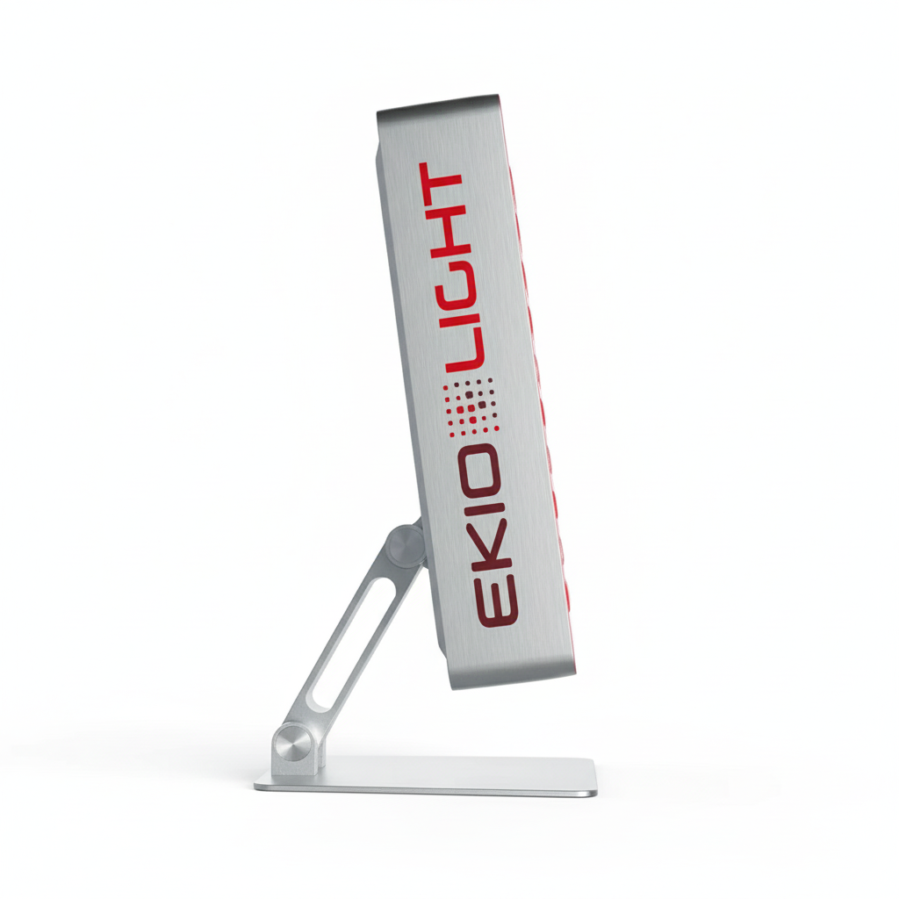

Cómo la luz roja e infrarroja transforma tu piel, reactiva tus células y detiene el reloj del envejecimiento.
Una guía completa sobre fotobiomodulación doméstica: la ciencia detrás de la tecnología, los protocolos de uso y los rituales de belleza que hacen de la Deep 5 algo más que una lámpara.

Tu cuerpo no solo necesita luz para ver. La necesita para existir, repararse y rejuvenecer. Lo que llamamos envejecimiento tiene mucho que ver con cuánta luz correcta estás recibiendo.
Durante millones de años, la vida en la Tierra evolucionó bajo el espectro completo del sol: luz ultravioleta al mediodía, luz visible durante el día, y una dosis generosa de rojo e infrarrojo durante el amanecer y el atardecer. Tu biología espera esa información luminosa y la usa activamente para regular funciones esenciales: producción de energía celular, síntesis de colágeno, ciclos de reparación nocturna, equilibrio hormonal.
El problema es que en el mundo moderno, vivimos bajo un espectro radicalmente empobrecido. Oficinas con luz fluorescente, pantallas con dominancia azul, noches iluminadas artificialmente. La luz roja e infrarroja —las frecuencias que más directamente alimentan la maquinaria energética de tus células— ha desaparecido de nuestras vidas.
"La mitocondria no solo produce energía: es un sensor de luz. Cuando recibe rojo e infrarrojo, activa los programas de reparación, regeneración y vitalidad que la evolución ha perfeccionado durante eones."
Cada célula de tu cuerpo tiene entre 1.000 y 2.500 mitocondrias. Estas estructuras no son solo "fábricas de energía": tienen fotorreceptores específicos que responden a la luz roja e infrarroja para regular la producción de ATP.
El adenosín trifosfato (ATP) es la energía que usa cada célula para realizar sus funciones. Los fibroblastos necesitan ATP para fabricar colágeno. Las células inmunes lo necesitan para reparar tejidos. Sin ATP suficiente, el envejecimiento acelera.
El 95% de la melatonina del cuerpo no la produce la glándula pineal por la noche. La producen las mitocondrias durante el día, estimuladas por la luz infrarroja. Esta melatonina actúa localmente como un potente antioxidante en cada célula.
Las mitocondrias producen agua metabólica como subproducto de la respiración celular. El infrarrojo cercano también activa la estructuración del agua intracelular, mejorando la comunicación entre células y la hidratación dérmica desde dentro.
No es una lámpara de decoración. Es un dispositivo médico-estético diseñado con una sola obsesión: llevar las longitudes de onda correctas, en la dosis correcta, exactamente donde tu biología las necesita.


"Antes, este tipo de tratamiento solo estaba disponible en centros médicos especializados a 60-120 € la sesión. La Deep 5 lleva esa misma tecnología al espacio de tu hogar, a diario, sin citas."
Los beneficios de la fotobiomodulación no son promesas de marketing. Son mecanismos biológicos documentados con décadas de investigación científica. Así es como ocurren en tu piel.
La luz roja a 660nm activa los fibroblastos dérmicos, las células responsables de fabricar colágeno tipo I y III. Más fibroblastos activos = más colágeno = menos arrugas.
El ATP adicional producido por las mitocondrias activadas acelera el ciclo de renovación celular. Las células dañadas se reemplazan más rápido. La piel "se renueva" más a menudo.
La fotobiomodulación modula la vía NF-kB, el interruptor principal de la inflamación celular. Esto tiene efecto en el acné, la rojez, la sensibilidad y el envejecimiento inflamatorio (inflammaging).
El infrarrojo cercano (850nm) activa el óxido nítrico endotelial, mejorando el flujo sanguíneo local. Más circulación = más nutrientes y oxígeno a la dermis = piel más viva.
La melatonina mitocondrial producida por la estimulación infrarroja actúa como antioxidante de primer nivel en cada célula, neutralizando radicales libres antes de que dañen el ADN.
La activación del agua metabólica intracelular mejora la hidratación desde dentro, no solo desde la superficie. La piel retiene mejor la humedad de forma estructural.
La fotobiomodulación acelera la migración de células epiteliales en zonas dañadas. Cicatrices superficiales, manchas postacné y marcas de expresión responden especialmente bien al tratamiento continuado.
La Deep 5 no es solo para la cara. En zonas corporales, el infrarrojo profundo activa la recuperación muscular, reduce el dolor post-ejercicio y mejora la circulación en tejidos profundos.
Usar la Deep 5 por la mañana simula la señal de amanecer que el cuerpo necesita para activar el programa de metabolismo y regeneración diurna. Tu biología literalmente "sabe" que es de día.
La fotobiomodulación no es magia. Es física. Los resultados dependen de dosis, frecuencia y constancia. Estos protocolos están diseñados para maximizar el beneficio biológico real.
Para las primeras 2 semanas, mientras el cuerpo se adapta a la estimulación lumínica.
Piel limpia, sin maquillaje ni cremas. Los filtros solares pueden reducir la eficacia. Si usas suero hidratante, aplícalo después.
Distancia de inicio más conservadora. Puedes acercarla progresivamente en semanas siguientes. La luz debe cubrir toda la zona a tratar.
Cierra los ojos durante la sesión. La luz roja no daña los ojos cerrados pero la intensidad directa puede ser molesta. Relájate: es tu momento.
La fotobiomodulación abre los canales dérmicos y mejora la penetración de activos. Es el momento ideal para aplicar sérum vitamina C o ácido hialurónico.
Para uso continuado a partir de la tercera semana. El protocolo del día a día.
Ritual matutino o nocturno. Piel limpia y ligeramente húmeda mejora la conductividad lumínica en la dermis.
Trabaja rostro completo los primeros 8 min, luego zona específica de interés (cuello, escote, contorno de ojos) los siguientes 5 min.
Ventana de absorción óptima: 15-20 min post-sesión. Los activos penetran más profundo aprovechando la vasodilatación y activación celular.
La Deep 5 no hace la piel más sensible al sol, pero una buena rutina siempre incluye SPF en la mañana.
Para fases de tratamiento activo o antes de eventos. Máxima densidad de estimulación.
La sesión de mañana activa el metabolismo diurno (colágeno, energía). La sesión nocturna potencia el programa de reparación que el cuerpo ejecuta durante el sueño.
Mañana: priorizar cara, cuello y escote. Noche: trabajar también contorno de ojos y zonas con mayor daño fotoinducido.
La astaxantina (poderoso antioxidante marino) y el DHA del Omega-3 potencian la respuesta biológica a la fotobiomodulación. La membrana celular enriquecida con DHA capta mejor la señal luminosa.
El ciclo de 5+2 permite que el tejido consolide la síntesis de colágeno iniciada en la fase activa. No más no siempre es mejor.
La Deep 5 no se limita al rostro. Zonas de tensión, recuperación post-ejercicio, celulitis y elasticidad corporal.
Cuello y escote (antienvejecimiento), zona lumbar (tensión y circulación), muslos y glúteos (celulitis), articulaciones (dolor e inflamación), abdomen (digestión y circulación).
Los tejidos más profundos del cuerpo requieren sesiones algo más largas que el rostro. El 850nm penetra hasta tejidos musculares y articulares.
La vasodilatación post-sesión mejora la absorción de aceites como el de rosa mosqueta o argan. Aplica inmediatamente después con masaje circular.
La sesión pre-ejercicio (5 min en zona muscular) activa la microcirculación. Post-ejercicio, acelera la recuperación. Ambos usos son compatibles.
La Deep 5 se adapta a tu vida, no al revés. Cada momento del día tiene su propio ritual de luz. Así es como integrar la fotobiomodulación en tu rutina real.
Inmediatamente después de levantarte, antes del café. 10 minutos de Deep 5 en el rostro mientras escuchas tu podcast o música. La luz roja matutina señaliza al cuerpo que el día ha comenzado, activa el metabolismo energético diurno y prepara la piel para el día. Es el equivalente a salir a ver el amanecer: información para tu reloj biológico.
Aplica la Deep 5 antes de tu suero estrella: vitamina C, retinol, niacinamida, ácido hialurónico. La vasodilatación cutánea inducida por la luz roja abre los canales dérmicos y puede mejorar la penetración de activos cosméticos un 30-40% respecto a aplicación sin tratamiento previo. Convierte tu cosmética buena en cosmética excepcional.
¿Esa bajada de energía a media tarde? La Deep 5 es una respuesta directa. 10 minutos de infrarrojo estimulan la producción mitocondrial de ATP justo cuando el ciclo circadiano tiene su segundo valle energético. Sin azúcar, sin cafeína. Solo luz. Puedes usarla en cara o en cuello y hombros para el alivio de tensión adicional.
La sesión nocturna con la Deep 5 activa los mecanismos de reparación que el cuerpo ejecuta durante el sueño. El infrarrojo estimula la melatonina mitocondrial (el antioxidante celular) justo antes de que empiece el ciclo de autofagia y renovación nocturna. Úsala con la habitación en penumbra, sin luz azul. Tu piel al despertar lo nota.
Inmediatamente después del ejercicio, aplica la Deep 5 en las zonas musculares trabajadas durante 15-20 minutos. El infrarrojo reduce el ácido láctico acumulado, disminuye la inflamación micromuscular y acelera la síntesis de proteínas de reparación. Menos agujetas. Más capacidad de entrenar al día siguiente.
La Deep 5 es extraordinariamente efectiva sola. Pero cuando se combina con otros pilares de la salud celular, los resultados se multiplican. La luz es un idioma. Estos son los traductores.
El DHA en las membranas celulares optimiza la captación de la señal lumínica. Una membrana rica en DHA es una antena mejor para la fotobiomodulación.
El antioxidante marino más potente conocido. Protege las mitocondrias del estrés oxidativo y amplifica el efecto antioxidante de la melatonina mitocondrial activada por la luz.
Los primeros 15 min de sol al amanecer (sin gafas de sol) sincronizan el reloj circadiano. La Deep 5 amplifica esta señal en días nublados o en interiores.
El grounding aporta electrones de la Tierra a la biología. Combinar fotobiomodulación + grounding potencia el estado redox celular de forma sinérgica.
Cofactor esencial en la síntesis de colágeno. Tomada internamente + sesión de Deep 5 = un circuito completo de estimulación + materia prima para la síntesis.
Una dieta con bajo índice glucémico reduce el inflammaging sistémico. La fotobiomodulación local + ausencia de inflamación sistémica = resultados mucho más notorios.
La luz azul nocturna destruye la melatonina. Si usas la Deep 5 para estimular la melatonina mitocondrial y luego te expones a pantallas 2 horas, contradices el efecto.
La exposición al frío activa el marrón adiposo y aumenta la mitocondriogénesis. Ducha fría por las mañanas + Deep 5 = doble activación mitocondrial.
Para las mentes que necesitan entender el "por qué" antes de creer el "qué". El mecanismo completo, paso a paso.
Los fotones de 660nm penetran hasta la dermis. Los de 850nm alcanzan tejidos más profundos gracias a su mayor longitud de onda.
La enzima citocromo c oxidasa (complejo IV mitocondrial) absorbe directamente los fotones en estas longitudes de onda. Es el fotorreceptor primario de la célula.
La absorción fotónica disocia el óxido nítrico (NO) que inhibe la respiración celular, liberando la cadena de transporte de electrones.
La cadena respiratoria libre produce más ATP. La célula tiene más energía disponible para todos sus procesos de síntesis y reparación.
El ATP extra activa factores de transcripción (NF-kB, AP-1, Nrf2) que regulan la síntesis de colágeno, la respuesta antiinflamatoria y los mecanismos antioxidantes.
El resultado final: fibroblastos más activos, más colágeno, menos inflamación, más antioxidantes locales y ciclos de renovación celular más eficientes.
Los primeros cambios —mejora del tono, piel más luminosa, sensación de descaso— se notan en 2–3 semanas de uso constante. Los cambios estructurales (reducción de arrugas, mejora de la firmeza, síntesis de colágeno visible) requieren 8–12 semanas porque el ciclo de renovación del colágeno dérmico es de 4–6 semanas. La constancia es lo que diferencia un resultado cosmético de una transformación real.
Sí, y de hecho la piel sensible es una de las que más se beneficia. La fotobiomodulación tiene un potente efecto antiinflamatorio —modula la vía NF-kB— que es exactamente el mecanismo implicado en la rosácea y la piel reactiva. Estudios específicos con LEDs rojos en rosácea documentan mejoras significativas. Comienza con sesiones más cortas (6-8 min) y a mayor distancia (25-30 cm) para que el tejido se adapte.
No solo es compatible: es sinérgico. La Deep 5 antes de aplicar activos mejora la penetración por vasodilatación y apertura de canales dérmicos. La vitamina C se complementa perfectamente porque actúa como cofactor en la síntesis de colágeno, que la Deep 5 estimula. El retinol también es compatible, aunque si usas ácidos exfoliantes fuertes (AHA/BHA al día siguiente de exfoliación intensa), deja 24h de margen y usa la Deep 5 a mayor distancia ese día.
La luz roja e infrarroja no es perjudicial para los ojos —de hecho, la fotobiomodulación ocular está en investigación para condiciones como la degeneración macular. Sin embargo, la intensidad directa puede resultar molesta o causar deslumbramiento. El protocolo estándar es cerrar los ojos durante la sesión, lo que es suficiente protección. Si quieres tratar específicamente el contorno de ojos (la zona donde el colágeno se degrada antes), acerca la lámpara a esa zona con ojos bien cerrados durante 3-5 minutos adicionales.
Los LEDs de alta calidad tienen una vida útil estimada de 50.000+ horas. Si usas la Deep 5 20 minutos al día, 365 días al año, son aproximadamente 122 horas anuales: más de 400 años de uso teórico. En la práctica, el dispositivo no requiere ningún tipo de mantenimiento, consumibles ni recarga. No hay partes que se degraden, no hay filtros que cambiar. Es una inversión única.
No existe evidencia de riesgo con el uso de fotobiomodulación durante el embarazo o la lactancia, y la literatura científica no reporta contraindicaciones. Sin embargo, como con cualquier dispositivo electromédico, la recomendación de precaución es consultar con tu médico o ginecólogo antes de comenzar el protocolo durante el embarazo, especialmente en el primer trimestre. La lactancia no presenta ninguna restricción conocida.
No necesariamente. La fotobiomodulación sigue una curva de respuesta bifásica (efecto hormético): hay una dosis óptima más allá de la cual el beneficio se estabiliza o puede incluso reducirse. Sesiones de 10-20 minutos son suficientes para activar los mecanismos de reparación. Más de 30 minutos continuos en la misma zona no aportará beneficio adicional significativo y puede producir una ligera fatiga de los fotorreceptores. La frecuencia (3-5 sesiones/semana) importa más que la duración individual de cada sesión.
Este es un punto importante para usuarios de EKIO. Los dispositivos LED emiten campos eléctricos y magnéticos de muy baja frecuencia asociados al cableado y al transformador. Están muy por debajo de los límites de seguridad establecidos. Para minimizar cualquier exposición, mantén el cable del transformador alejado del cuerpo durante la sesión y usa la lámpara a la distancia recomendada (15-25 cm), no pegada a la piel. Si quieres una protección adicional del entorno electromagnético global del espacio de trabajo, los productos SPIRO son complementarios.
Tu cuerpo lleva años esperando esta información. La Deep 5 no es un gadget de moda: es la herramienta más directa y documentada para devolver a tus células la energía que la vida moderna les ha quitado. El envejecimiento es, en parte, un déficit de luz correcta. Ahora tienes la opción de corregirlo.
💬 Habla con nosotros · WhatsApp+34 639 183 105 · ekio.es · electrosmogespana.com